I chose to explore the relationship between food availablity and life expectancy because I'm a big foodie, and I like to keep track of how much I eat day-to-day. Using these attributes as they exist in the world seemed like a natural extension of these qualities and allowed me to get a sense of how much or little other people in the world have to eat, and how it affects their wellbeing. I intended to look at how obesity rates negated the benefits of food availability, but the data was not available to download.Using my visualization, one can understand the way the data is distributed using the histograms, spaitally distributed using the maps, and correlated using the scatterplot. The change over time to the data can be seen by changing the year and brushing enables the user to look at subsets of the data, whether a range of values, countries, or the Earth.
I started with two datasets, the daily per-capita supply of calories and the life expectancy from birth, both by country. The former ranged from around 1700 to close to 4000 calories per day, and the latter from as low as 50 years to close to 85 years. I added two additional datasets, the percent of people who can't afford a healthy diet and the per-capita health expenditure of the countries. The health expenditure one was interesting as it is extremely long-tailed, with a significant proportion of countries being in the $0-1000 range, with a few extreme outliers. The data can be found found via:
I did not have any sketches that I used to layout the page for this project. The biggest concern I had for the layout was that it needed to be visible within a single page so the various interactions' effects could be seen across the different elements.
My project has 5 views of the data: 2 histograms, 2 choropleth maps, and one scatter plot.
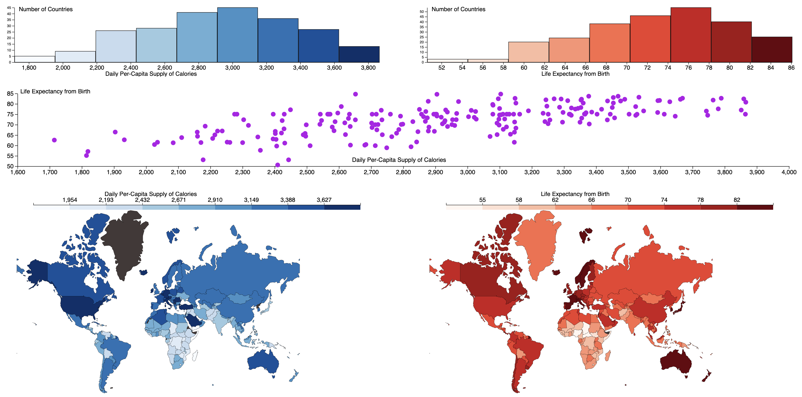
Each view enables brushing and mouseover interactions. The brushing works by taking the countries brushed over (all those in a brushed bin for the histogram) and updating all the other views to make those selected countries stand out. This stand-out effect is achived using opacity for the maps and histograms, and color for the scatterplot. The opacity works for the two I used it on because of their univariate nature. For the scatterplot, the color change gives a nice effect of looking like movement, which I think helps to highlight correlation. When brushing, I decided to make the scales of the other visualizations (minus the scatterplot) update to reflect the selected data. I thought this provided a cool animation-looking effect, and allowed the user to see a new view that is more refined based on what they selected.
The mouseover simply shows the value(s) of the given point, bar, or country.
I added a slider for the year the data was recorded and the number of bins for the histograms and maps. The way binning works is cool because the maps and histograms share the same colormaps and enable a user to get the range of values from one and the location of them from another. I use simple dropdowns to change the independent and dependent variables, with the independent being the left/blue visualizations and the depenednt being the right/red ones. The scatterplot is purple because it has both datasets shown and blue + red = purple.
My application enables users to discover how the different data attributes vary throughout the world. When brushing through the country data, I noticed the data is not very dependent on longitude, but latitued provides a much stronger signal towards the data. By brushing over the map, I was able to spot this pattern.
Another thing I noticed while exploring the data was there is a plateau in the life expectancy as annual per-capita health expenditure increases.
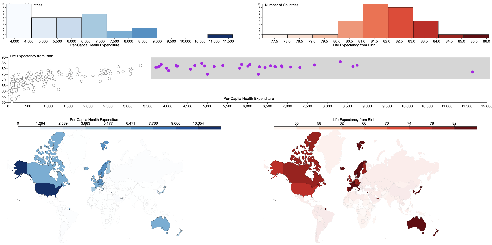
My process for creating the application was pretty similar to how we did visualizations in previous assignments and in class. It uses D3 for pretty much everything. I had to get creative with how interacting with one of the visualizations updates another one, and I accomplished this in an interesting way. Each visualization has a "dependentVis" attribute. Whenever an interaction meant to update other visualizations occurs, it loops through the list of dependents and updates the necessary information. The code structure is pretty intuitive given the setup of the visualization. There's one file for every visualization type where the class is defined. The main.js file instantiates the different visualizations and handles switching datasets, years, and bin counts. The year and bin sliders have js embedded in index.html to show the currently selected value, as this was simpler than handling it in main.js or somewhere else. The application is deployed here and the code lives here.
I had very little issue completing the project requirements on time. The biggest problem I had was with the "cumulative brushing" problem I had. After brushing within one visualization, the user could brush another and select a subset of the other brushes subset. This effectively allowed you to keep brushihing between views until you were only at one or two countries. This was not desireable to me as I felt like I would get lost doing it, not knowing exactly what I had brushed and what subset I was on now. I removed feature by addding a "brushingDisabled" attribute that was set to true for any visualization that was a dependent of the currently brushed one. Now you could only brush a different view by removing the first brush.
My highest-priority goal for future work on any projects in this course is making it look nicer. I was able to get everything on one page, but it's just basic HTML with very little CSS, and looks very dated. Front-end is not something I've had the opportunity to work on much, so I've got a lot to learn.
I did not receive assistance from any peers in particular, besides that which was shared on the discord. I did get assistance from AI tools, though. I used AI to help with the following aspects:
My demo video can be found here.
I chose my two locations for my knick-knacks based on their significance to me. My more detailed one - that of Pompano Beach - was an easy pick. In May of 2025, I proposed to my then girlfriend of 5 years on the beach at sunset, and she said yes! This model depicts this exact moment, as it uses the photo that was taken as a base for the model. The other knick-knack depicts University of Cincinnati, a place that I've spent a significant amount of time at the last 5 years. It features a Bearcat Paw model and the university's best attribute: Crosley Tower.
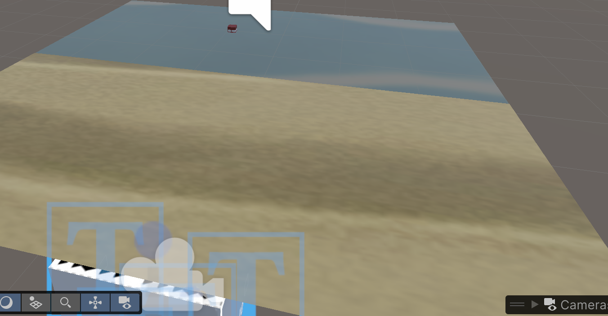
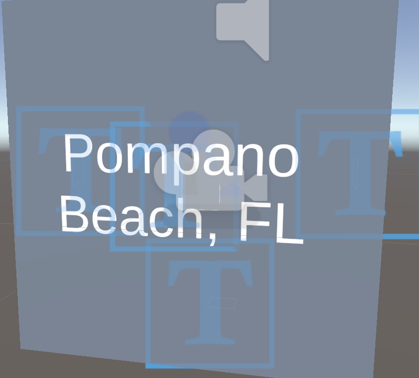
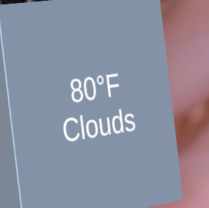
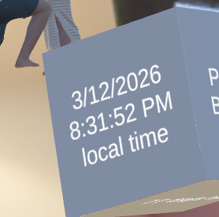
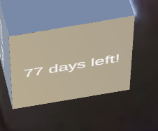
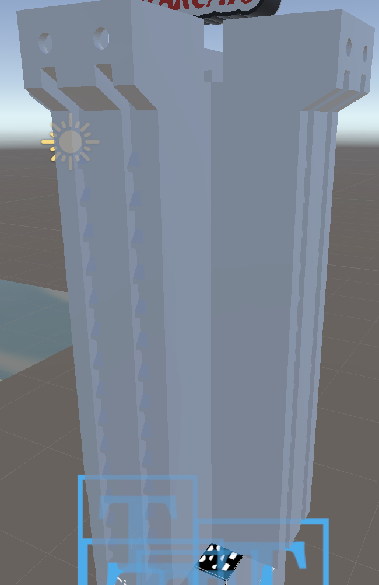
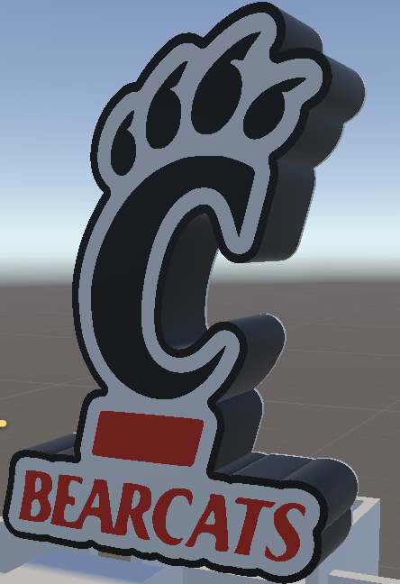
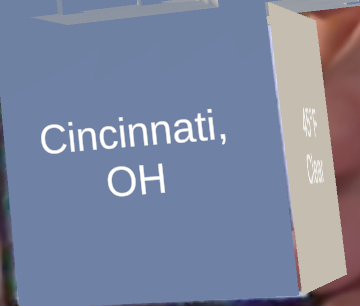
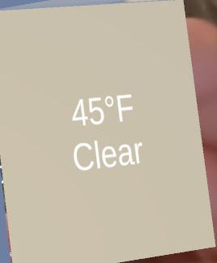
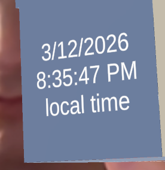
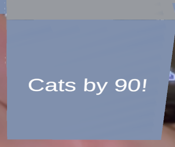
The application makes heavy use of Vuforia. It is the library that handles all tracking and camera stuff. Another noteworthy library is Open Weather, whose API I use for getting weather data at both locations. As for my own code, it's pretty straightforward with just attaching scripts to the relevant things that need to change. I added the script `LightCycle` to the directional lights of both knick-knacks. This script changes the angle of the light based on the time of day, with noon being the most direct (highest intensity) and midnight being the least (lowest intensity). The weather text gets a script `WeatherAPI`, which pulls the weather data from the API, shows the temperature and conditions, and if it is one of the rainy conditions ("Rain", "Thunderstorm", "Drizzle", or "Tornado"), spawns a rainy affect that has both visual and auditory elements. This script, along with the beach sound (in the first knick-knack) both become enabled when their respective cubes are tracked, using the MultiTarget event callbacks. They are subsequently disabled when the objects are no longer tracked. The script `GetTime` for getting the current time is pretty simple, relying only on built-in libraries for converting between time zones. The same goes for the countdown script `CountdownText`, which does a similar thing for time zones, then parses the data and subtracts it to get the difference between now and the event date. Lastly, the ring box has a script `RingBox` attached that causes it to open when the cube is moved close to the camera. This operates by changing the local position and angle of the box's lid. The distance is computed by maintaining a reference to the AR camera GameObject and constantly computing the distance between it and the box, triggering it to open if it drops below a threshold.
To access my application, the code can be obtained via GitHub. After
cloning, it can be opened in Unity and ran there. I also deployed the application to my iPhone to complete the level 6 goal.
My biggest challenge with this project by far was creating models. Even with a tutorial to follow along with, it took me a significant amount of time to model the ring and ringbox. The tutorial was about 30 minutes, and I spent closer to 3 hours following along and was still left with pretty under-whelming models. Everything about the opening/closing is handled in Unity, but with more experience I feel I could have done it in Blender and made the motion smoother. In addition, I could have had better looking and more realistic textures. I had no chance of creating the models of my fiancé and me, thus the AI mesh tool I mentioned earlier handled all that. Given that it's an AR scene, the weird AI artifacting is not very noticeable, but if this was intended to be used in a more immersive environment, significant cleanup would be required.
For this project, I made pretty limited use of AI and no peer assistance. Of course, I used AI to get the model of my fiancé and me. Apart from this, I used it a little bit to assist with scripting questions like what types things should be and what I should be looking for in the Unity docs, but other than this my experience with Unity was enough to get me through.
My demo video can be found here (part 1) and here (part 2).
To help people quickly understand where, when, and what kinds of 311 issues are happening in Cincinnati, using linked map + timeline + attribute views so they can explore patterns (hotspots, seasonality, and which departments/priorities are involved) instead of scanning raw records.
This project uses 2025 Cincinnati 311 non-emergency service request data.
Official dataset: Cincinnati 311 Non-Emergency Service Requests
Repository CSV used by the app: data/Cincinnati311(Non-Emergency)_Service_Requests_20260227.csv_Service_Requests_20260227.csv)
Base Cincinnati neighborhood GeoJSON source: blackmad/neighborhoods repository search for Cincinnati
Neighborhood boundary file used on the map: data/cincinnati.geojson, which is a customized version of that base source with East Walnut Hills added
Our site filters the raw Cincinnati 311 Non-Emergency Service Requests CSV down to 14 service types that are mappable and comparable in a single interface. Important fields used in the visualization include request type, neighborhood, public agency, priority, method received, creation date, last update date, latitude, and longitude. In the app, DATE_CREATED drives the timeline, DATE_LAST_UPDATE is used to derive response-time measure in days, and latitude/longitude put each request on the map.
One important design decision is that the app does not attempt to visualize every possible field from the dataset at once. It focuses on fields that can be compared across multiple views such as geography, time, service category, agency, priority, and request intake method.

We started our project by creating the sketch shown above as a reference for us to begin building and laying out our visualizations. We found sketching to be crucial in our ability to work asynchronously on the project as it enabled us to work individually while ensuring we were working towards our shared vision. With visually creative projects such as this one, making design decisions can be very difficult but using sketches to explain our thoughts helped us communicate our ideas effectively.
The main part of the sketch is how we wanted to size and layout the map. We all agreed that it should be the first thing users see and interact with, because it is the best way to convey the geospatial insights of the 311 data. Below the map, we wanted to add something which showed the same data as above but on a time scale to supplement what is shown above. In our final product, we coupled the plot below to the map with an animation to better show the changes in 311 calls over time.
While the sketches were a great starting point, you will see that our final project has taken some large deviations. We were able to bake in certain features like the panning and zooming more natively, and were able to consolidate the legend and color by selections into one control box saving space on the screen. We found that a lot of the supplemental visualizations would work well by themselves without having to be on the screen at the same time as the map. We then decided to remove them from the side and put them below the map to make more space.
The app is a coordinated multiple-views (CMV) dashboard with six linked views:
Map (Leaflet): plots calls by lattitude/longitude with a heat layer and boundary overlay. Supports service type filtering, legend-based color encoding, and rectangle brushing by SR_NUMBER.
Timeline: weekly bar chart of call volume. Supports hover tooltips, x-axis brush (filters all views), and a Play/Pause animation that sweeps through all calls in the year in ~30 seconds.
4 Attribute Charts (horizontal bar charts): Neighborhood, Method Received, Agency, and Priority. Each supports hover tooltips and y-axis brushing to filter all other views.
Interactions are fully linked — brushing any view (map, timeline, or attribute chart) filters all others. Reset clears all selections.
Spatial hotspots shift by service type — toggling categories moves density clusters across the city.
Eg: Overtime parking requests cluster in Clifton/Downtown Cincinnati as seen below:
Seasonal patterns — some categories (e.g., snow/ice/trash pickups) spike in winter; others are uniform. Almost all of slippery streets requests were made in January.
We used only a handful of libraries to build our application. The main library we relied on, D3, enables creation of and brushing, linking, animating, and providing on-demand details within the various charts we display. All charts utilize D3 to produce their SVG elements, position them in the right location, and add the necessary event handlers to provide hover and brushing interactions. The map is made with Leaflet. Leaflet has built-in functionality for producing tiles of street or satellite-based geospatial information, and an interface for adding various elements such as markers and the heatmap, and interactions like brushing, panning, and zooming. For the heatmap specifically, a library called Leaflet.heat was used. This took in the same latitude/longitude pairs as the markers and drew on the map based on the density of the data.
As for code structure, we settled on a pretty flat layout. Two modules comprise the project: one for attribute/timeline views and one for the map. The attribute and timeline view code is pretty strictly D3-derived, thus it logically gets grouped together. The map module more heavily relies on Leaflet, thus it is on its own. This module also contains logic for data parsing and more general filter operations (such as that for service types). It's located in the map module because the map requires tighter coupling to the data (more controls and attributes are required) whereas the other module has more flexibility with their data interface and can adapt to what the map might need.
To run our code, pull it down from here and serve it using your choice of framework. Our deployed application lives here.
We had a few challenges that we faced along the way in creating our project. No one in our group is particularly privy to CSS, thus styling was a challenge. There was stuff with the way classes vs. IDs are defined that we got hung up on and it took awhile to find a way to standardize our tooltip styling. We also struggled with map interactions once the heatmap was added. The heatmap seemingly was placed in front of what the map uses for interacting with the markers. Having it so that the heatmap layer was added prior to the marker layer made it so that on initial load interactivity was restored, but any filtering messed it back up. The solution was to not re-create the heatmap layer with every change but rather to update the layer that was already there.
One nice-to-have that could be addressed in the future is sharing relevant attributes between visualizations. A concrete example of this is with the attribute views. Our map uses one color scheme to differentiate between neighborhoods, e.g., but the corresponding view of call counts does not adopt this scheme, creating a little bit of a disconnect.
Soham - I used Cursor to help me write the documentation for this project as well as helping me with the animating the timeline for the Level 8 goal. I also used Claude Code for some debugging as I find it better with debugging single files as Cursor can get confused with the project context sometimes.
Matt - I tried to use ChatGPT to help debug the heatmap problems. After going back and forth for awhile, I was receiving lots of recommendations to fix the way things were seprated into panes (with the goal of getting the interactivity pane in the front). This never quite worked how we wanted, and it was Gemini's idea to add the heatmap layer once (instead of every update) and update it with the new point information. I'm a ittle disappointed I couldn't get this far with ChatGPT, especially given that it was the automatic Google search Gemini response that helped me get through the problem.
Austin - I used Cursor to help with UI layouts, specifically when laying out the map with the charts and timelines and dealing with CSS to get the styles I was wanting to achieve. It also helped to add East Walnut Hills to our neighborhood outline geojson, because it was originally missing from the dataset. In addition to UI, Cursor was helpful for debugging and providing useful snippets for filtering and coloring the points on the map.
JP - I found that AI was really useful to add new Color by options once the styling was already determined for at least one other option and the controller object had already been made. Using the built-in Copilot in VSC, I was able to quickly implement the Service Types option to the legend without having to manually create each individual portion.
I was able to use comments in the text editor as well as the chat feature to provide the context of the other implemented options. Copilot was able to use thes to model the new feature after the previous ones, matching the formatting, styling, and features supported in the other options. The output was not fully implemented and didn't create any of the new logic which makes Service Types different, but it did save me a lot of time and let me focus on implementing the nuances like how to change the rows of data being plotted, and toggle which points are visible and which are not using the legend.
Austin worked on the base map and getting the data plotted onto the map of Cincinnati and implementing both street and aerial way. He also helped with UI decisions for the overall view of the page.
Matt developed the heatmap functionalities and attribute views for the four different attributes Neighbordhood, Public Agency, Priority and Method of Call
Soham implemented the timeline viewer for calls throughout the year as well as the animation that shows changes in call volume over the year. He also implemented the linking for brushing between the map and attribute/timeline graphs.
JP implemented the various Service Types for the 311 calls and the ability to select them on the map and update the other charts based on the selection.
A demonstration of our video can be found here.